2026 / Single
Official materials / 2026
The power of metalcore from Central Asia.
About NORVI
NORVI is a metalcore band from Almaty, Kazakhstan, formed in 2019. Known for intense live performances and an energetic stage presence, the band has established itself as one of the leading metalcore acts in Central Asia.
They have performed on major stages across the region and beyond, bringing powerful sound, raw energy and visuals built for a full room.
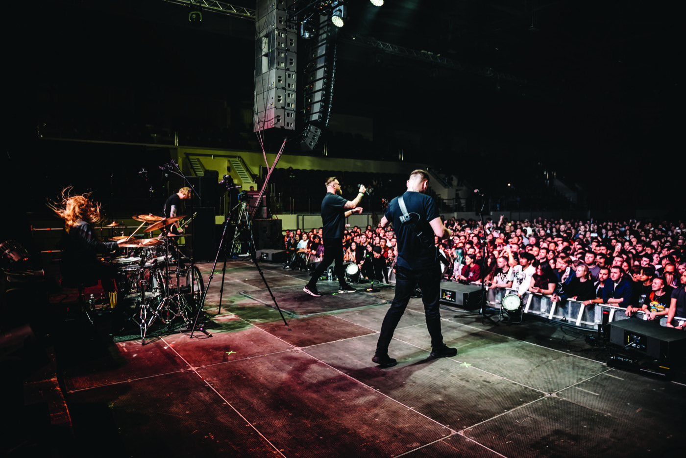
Tours and performances
NORVI is actively touring across Central Asia. Their shows are known for powerful sound, raw energy and striking visuals that consistently draw hundreds of fans.
The band has shared the stage with international heavyweights including Skillet and Slaughter to Prevail.
See current dates ↗Music videos
Discography
From the first full-length to the newest single.
2026 / Single

2025 / Single

2025 / Single

2024 / Single

2021 / Album

2019 / Album
Live archive
A selection of the rooms, routes and bills NORVI have played.
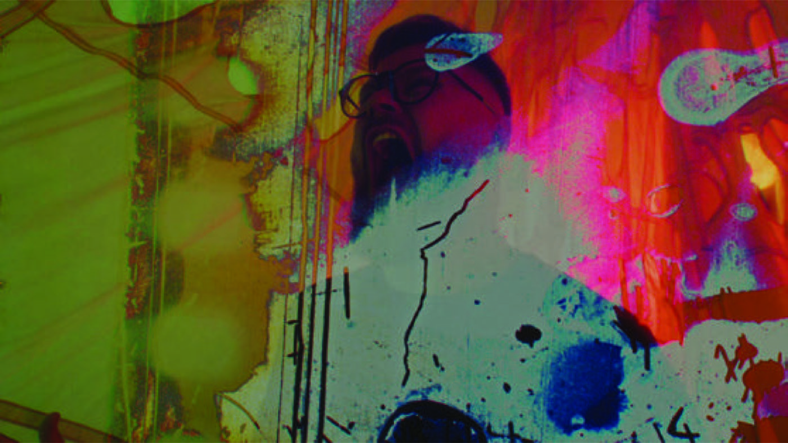
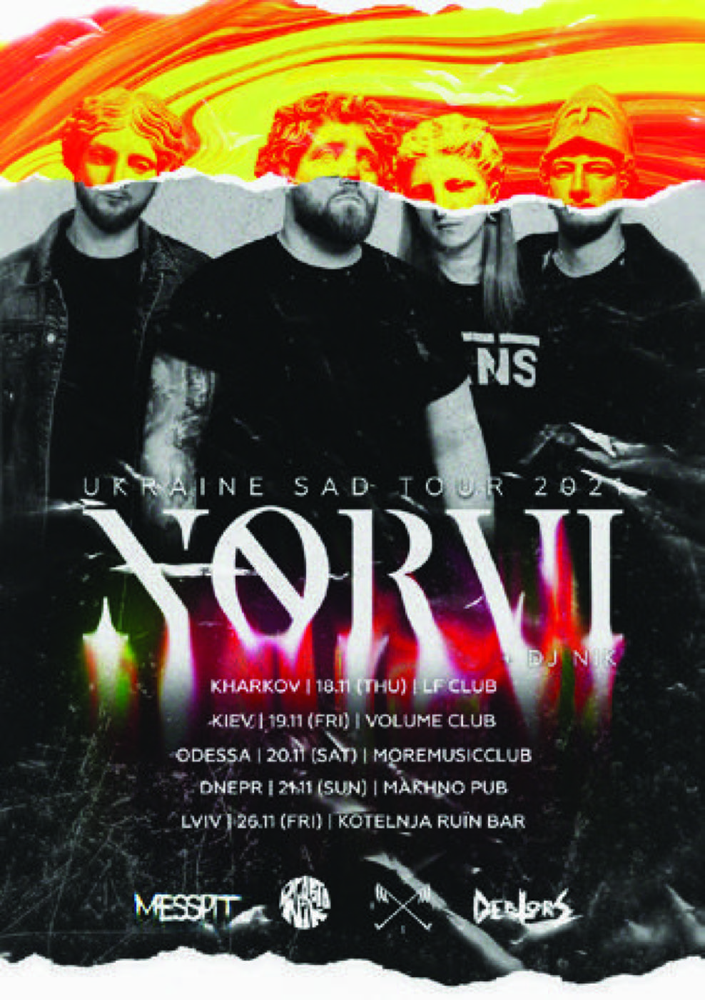
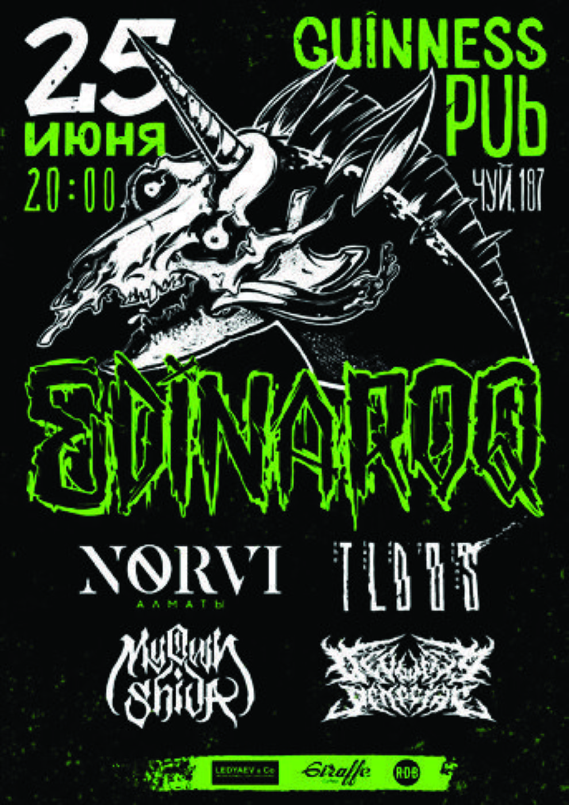
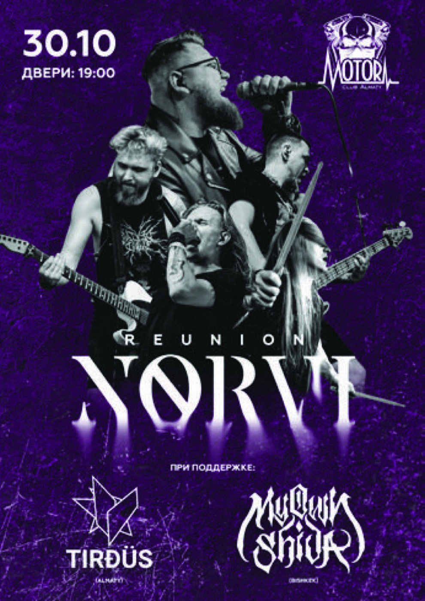
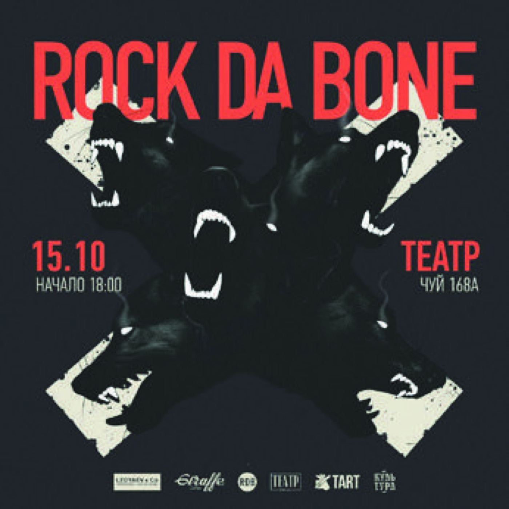
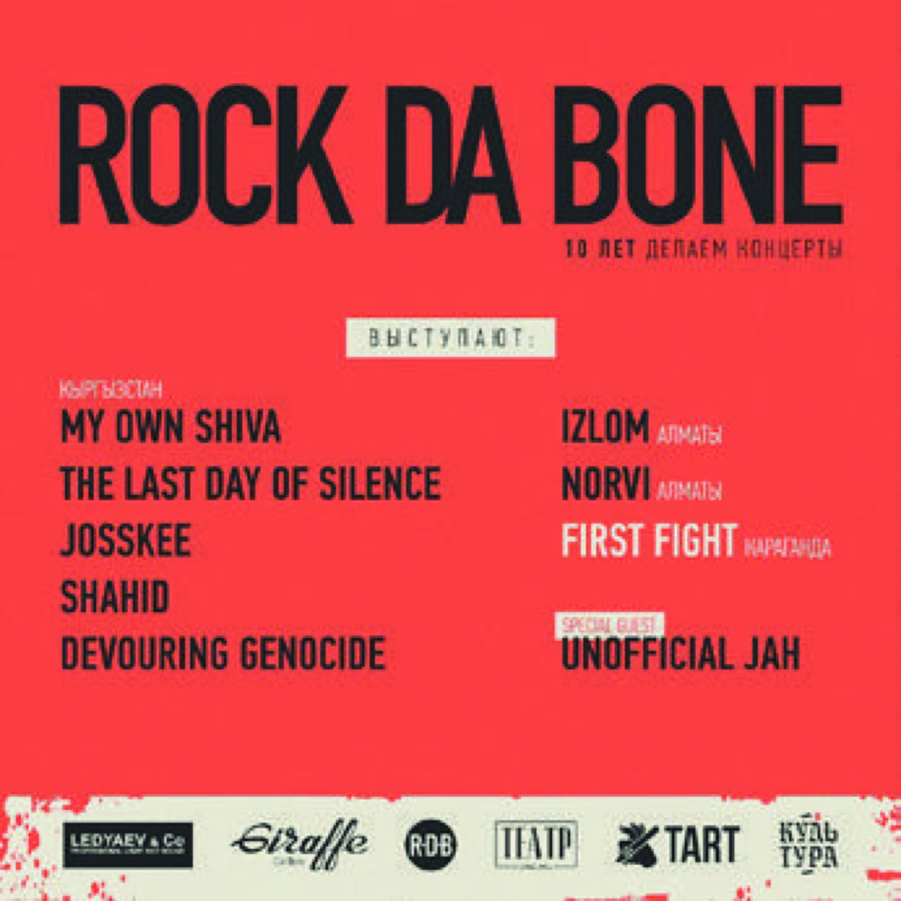
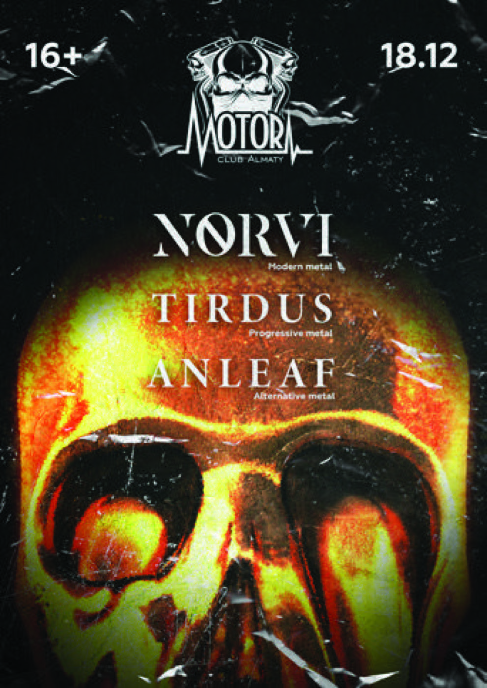
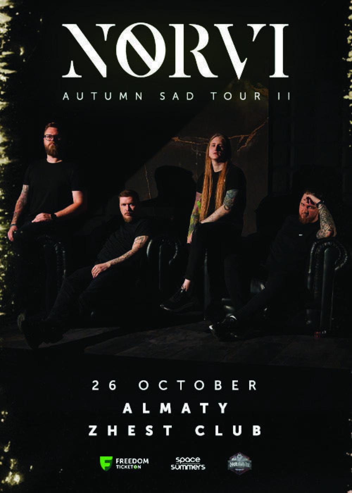
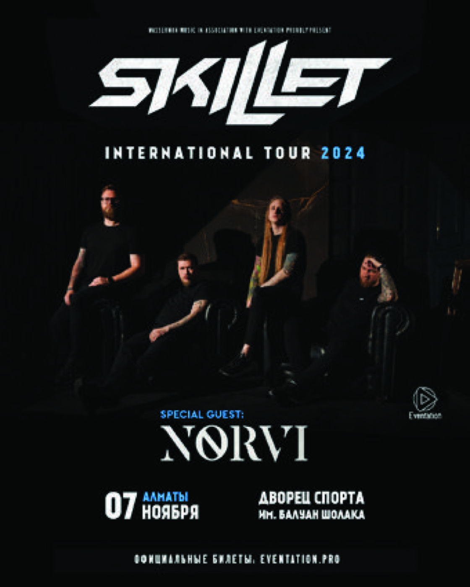
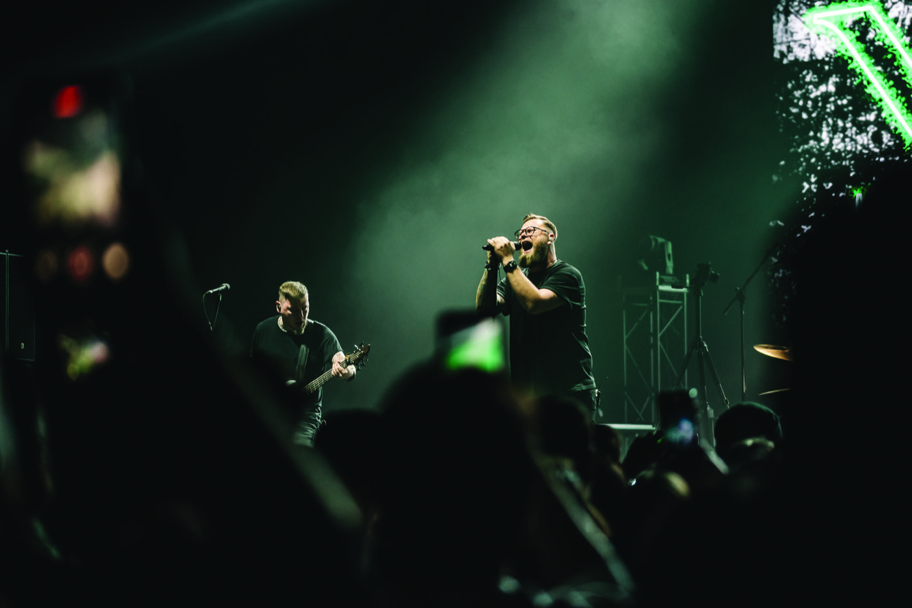
Press and reviews
“Exceptional job. Truly exceptional talent.” Folk Rock Alchemist
“Incredible breakdown, brutal vocals.” Yuriy Sumnyk
“Great melodies, awesome vocal lines.” Federico Balestreri
“Modern production, harsh vocals.” Metalperver
“Solid drumwork, catchy riffs.” Cutting Edge Metal
“Great energy on the vocals.” fitleague
“Cool instrumentals, nice production.” frey7767
“A lot of power in intro.” Modern Rock Lists
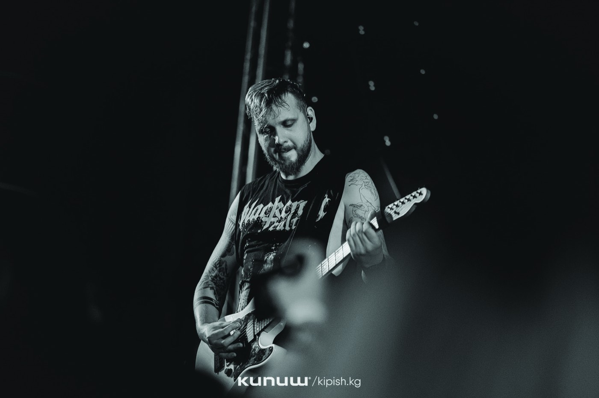
Contact information
For booking, festival availability, press images, technical rider or any additional materials, contact Ilya directly.
Email the band ↗